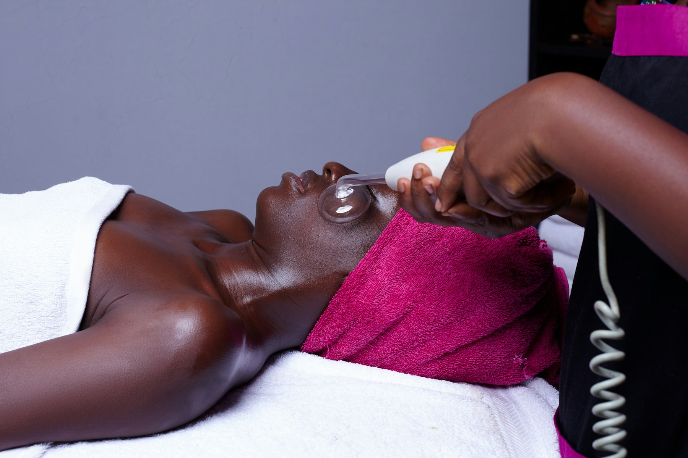

Neu · InMode Radiofrequenz
FORMA Hautstraffung
Spür die Kraft der Radiofrequenz: Wir aktivieren auf natürlichem Weg Ihr Kollagen in der Tiefe — für eine straffere Haut und klarere Konturen. Ohne OP, ohne Filler.

Was ist das?
Straffung von innen, ganz ohne Nadel
FORMA ist eine Radiofrequenzbehandlung von InMode, die Wärmeenergie gezielt in tiefere Hautschichten einbringt. Dort regt sie den natürlichen Aufbau von Kollagen an — für eine spürbar straffere, festere Haut, ganz ohne Spritze und ohne Ausfallzeit.
Wir setzen FORMA gezielt an Gesicht, Jawline, Hals und Augenpartie ein, überall dort, wo die Spannkraft der Haut mit der Zeit nachlässt.
Ablauf
So läuft Ihre Behandlung ab
Kostenloses Beratungsgespräch
Wir schauen uns Ihre Gesichtspartien gemeinsam an und besprechen Ihr Ziel.
Digitale Hautanalyse (optional)
Auf Wunsch analysieren wir Ihre Haut und das Kollagen auch in der Tiefe.
Radiofrequenz-Behandlung
Das FORMA-Handstück bringt Wärmeenergie gezielt in die gewünschte Zone ein.
Abschlusspflege
Eine beruhigende Pflege rundet die Behandlung ab — ganz ohne Ausfallzeit.
Beliebte Behandlungen & Preise
Ein Überblick
Für ein optimales Ergebnis wird bei den meisten Zonen eine 6er-Kur empfohlen. Alle Preise laut aktueller Online-Buchung, Stand der Erhebung — bitte im Zweifel telefonisch bestätigen lassen.
Von uns auf Instagram
FORMA in Aktion
Ein aktuelles Beispiel aus unserem Studio — natürlicher Kollagenaufbau, ganz ohne OP und ohne Filler.
Reel ansehen
@beautyloungeneuss auf Instagram — ein Blick hinter die Kulissen bei FORMA.
Vorteile
Das bringt Ihnen die Behandlung
- Natürlicher Kollagenaufbau statt OP oder Filler
- InMode-Technologie, keine Nadeln
- Keine Ausfallzeit — direkt weiter im Alltag
- Kostenloses Beratungsgespräch vorab möglich
Geeignet für
Für wen ist das genau richtig?
- Nachlassende Spannkraft im Gesicht
- Erschlaffte Jawline oder Doppelkinn-Ansatz
- Elastizitätsverlust an Augenpartie oder Hals
- Wunsch nach Straffung ohne OP oder Filler
Häufige Fragen
Gut zu wissen
Nein. FORMA arbeitet ganz ohne OP und ohne Filler. Die Radiofrequenz-Energie regt Ihr eigenes Kollagen in der Tiefe an, statt Volumen von außen zuzuführen oder operativ einzugreifen.
Direkt nach der Behandlung wirkt die Haut oft schon etwas straffer, das eigentliche Ergebnis zeigt sich aber erst in den folgenden Wochen, wenn Ihre Haut neues Kollagen aufgebaut hat.
Für ein sichtbares und langfristiges Ergebnis wird in der Regel eine Kur aus mehreren Sitzungen empfohlen. Im kostenlosen Beratungsgespräch stimmen wir die genaue Anzahl auf Ihr Anliegen ab.
Ja, gerne. Wir bieten ein kostenloses FORMA-Beratungsgespräch an, in dem wir Ihre Gesichtspartien gemeinsam anschauen und ehrlich einschätzen, was FORMA für Sie erreichen kann.
Unsicher?
Nicht sicher, ob das die richtige Behandlung für Sie ist?
Machen Sie den kurzen Behandlungsfinder — in vier Fragen zur passenden Empfehlung.
Weitere Behandlungen